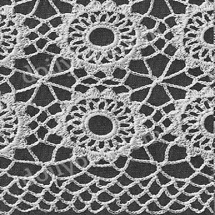

|
Meadowsweet Tablecloth MATERIALS: J. & P. COATS BEST SIX CORD MERCERIZED CROCHET, Art. A.105, Size 20: 27 balls of No. 1 White or No. 61 Ecru for Small Cloth; 36 balls for Large Cloth; or CLARK'S "BIG BALL" MERCERIZED CROCHET, Art. B.34, Size 20: 29 balls of No. 1 White, No. 61 Ecru or No. 42 Cream for Small Cloth; 39 balls for Large Cloth; or CLARK'S "BIG BALL" MERCERIZED CROCHET, Art. B.345, Size 20: 20 balls of No. 1 White or No. 61 Ecru for Small Cloth; 26 balls for Large Cloth. Each motif measures 2 inches. Small Cloth measures 64 inches. Excluding border. Large Cloth measures 64x84 inches. Excluding border. Milwards Steel Crochet Hook No. 9. FIRST MOTIF: Starting at center, ch 18. Join with sl st to form ring. 1st rnd: Ch 1, make 32 sc in ring. Join with sl st to first sc. 2nd rnd: Ch 1, sc in joining, (ch 5, skip next sc, sc in next sc) 15 times; ch 2, dc in first sc to form last loop-16 loops. 3rd rnd: Ch 1, sc in loop just formed, ch 3, * sc in next loop, ch 3. Repeat from * around. Join to first sc. 4th rnd: Ch 1, in each ch-3 loop around make sc, 3 dc and sc-shell made. Join to first sc-16 shells. 5th rnd: Sl st in next dc, ch 1, sc in next dc, * ch 7, sc in center st of next shell, ch 9, sl st in 4th ch from hook for picot, ch 5, sc in center st of next shell, ch 7, sc in center st of next shell, ch 5, sc in center st of next shell. Repeat from * around, ending with ch 5. Join to first sc. Break off and fasten. SECOND MOTIF: Work exactly as for First Motif until the 4th rnd has been completed. 5th rnd: Sl st in next dc, ch 1, sc in next dc, ch 7, sc in center st of next shell, now join 2 motifs along one side as follows: Ch 7, sl st in any corner picot on First Motif; ch 1, skip next ch of the last ch-7 on Second Motif; sl st in next ch of same ch-7, ch 5, sc in center st of next shell on Second Motif; ch 3, sl st in next ch-7 loop of First Motif; ch 3, sc in center st of next shell on Second Motif; ch 2, sl st in next ch-5 loop on First Motif; ch 2, sc in center st of next shell on Second Motif; ch 3, sl st in next ch-7 loop on First Motif; ch 3, sc in center st of next shell on Second Motif; ch 7, sl st in next corner picot on First Motif; ch 1, skip next ch of the last ch-7 on Second Motif; sl st in next ch of same ch-7, ch 5, sc in center st of next shell on Second Motif; working on Second Motif only ch 7, sc in center st of next shell, ch 5, sc in center st of next shell; starting at * on 5th rnd of First Motif, complete motif exactly as for First Motif (no more joinings). Make 32 x 32 motifs for Small Cloth or 32 x 42 motifs for Large Cloth, joining motifs as Second Motif was joined to First Motif (where 4 corners meet, join corners to previous joinings). BORDER 1st rnd: Attach thread to picot joining of motifs preceding any corner of cloth, ch 1, sc where thread was attached, * ch 11, sc in next ch-7 loop, ch 11, skip next ch-5 loop, sc in next ch-7 loop, ch 11, sc in corner picot, ** ch 11, sc in next ch-7 loop, ch 11, skip next ch-5 loop, sc in next ch-7 loop, ch 11, sc in next joined picots. Repeat from ** to last picot joining of motifs before next corner. Repeat from * around, ending with ch 6, d tr in first sc to form last loop. 2nd rnd: Ch 1, sc in loop just formed, * ch 7, in next loop make sc, ch 7 and sc. Repeat from * around, ending with ch 7, sc in first loop used at beg of rnd, ch 4, dc in first sc to form last loop. 3rd rnd: Ch sc in loop just formed, (ch 7, sc in next loop) 6 times; * ch 7, in corner loop make sc, ch 7 and sc; ** ch 7, sc in next loop. Repeat from ** across to within next corner loop. Repeat from * around, ending with ch 4, dc in first sc. 4th and 5th rnds: Ch 1, sc in loop just formed, * ch 7, sc in next loop. Repeat from * around, ending as on 3rd rnd. At end of 5th rnd break off and fasten. Block to measurements.  HOME |